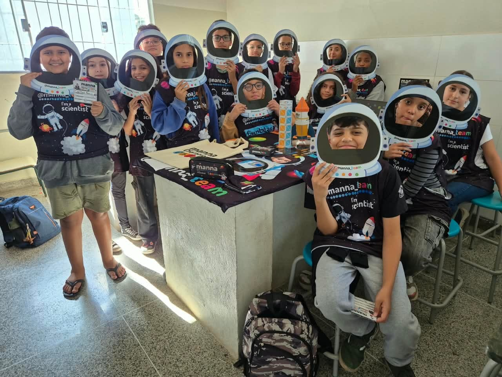

Projeto Manna
Desenvolvido pelas professoras Cláudia e Elena
O Projeto Manna promove atividades e experiências educativas envolvendo os estudantes, valorizando a participação, a aprendizagem e o desenvolvimento de novos conhecimentos no ambiente escolar.

1 / 6
Projeto Manna
Registro das atividades do Projeto Manna realizadas na escola pelas professoras Cláudia e Elena.